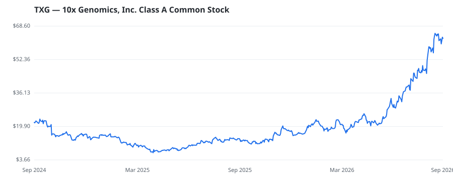

bullish · bearish · n/a — dots: price>SMA10 · SMA10>SMA50 · SMA50>SMA200 · up>down volume (20d)
Technology Hardware · mid cap

10x Genomics Inc is a life science technology company based in the United States. Its solutions include instruments, consumables, and software for analyzing biological systems. The company's integrated solutions include instruments, consumables, and software for analyzing biological systems at a resolution and scale that matches the complexity of biology. Its product offerings include a Chromium platform comprising microfluidic chips and related consumables, Chromium X series, Visium and Xenium platforms, and others, which are predominantly used for the study of biological components. Geograph LABORATORY ANALYTICAL INSTRUMENTS · website
| Revenue | $642.8M | Net income | $-43.5M |
|---|---|---|---|
| Operating income | $-61.0M | Diluted EPS | $-0.35 |
| Assets | $1.0B | Equity | $796.3M |
This name produced 0.6% of the ranked funds’ total alpha.
🛒 Newly buying: Duquesne Family Office LLC (+38%, 0.4% of book) · Kaufman Rossin Wealth, LLC (+11%, 0.1% of book) · NKCFO LLC (+15%, 0.1% of book)
| Fund | Fund alpha vs SPY | Position | % of book |
|---|---|---|---|
| Blue Water Life Science Advisors, LP | +210% | $25M | 15.5% |
| Meridiem Capital Partners LP | +7% | $16M | 0.7% |
| Duquesne Family Office LLC | +38% | $15M | 0.4% |
| Tao Capital Management LP | +125% | $11M | 0.6% |
| ARCH Venture Management, LLC | +47% | $8M | 0.8% |
| NKCFO LLC | +15% | $0M | 0.1% |
| Kaufman Rossin Wealth, LLC | +11% | $0M | 0.1% |
Hedge data: SEC EDGAR 13F · ranked funds beat SPY in >50% of their quarters · fund alpha = mirror-portfolio return minus SPY.